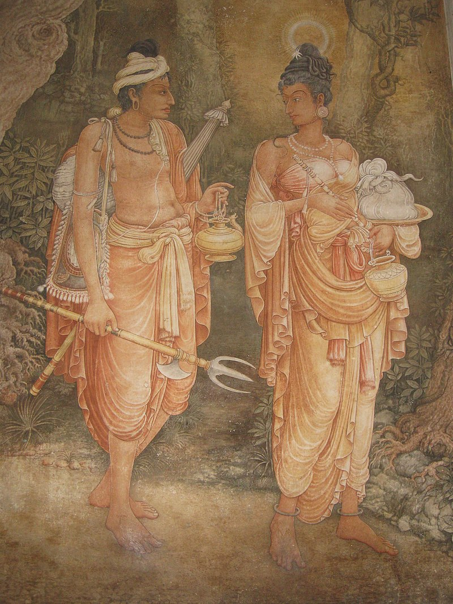
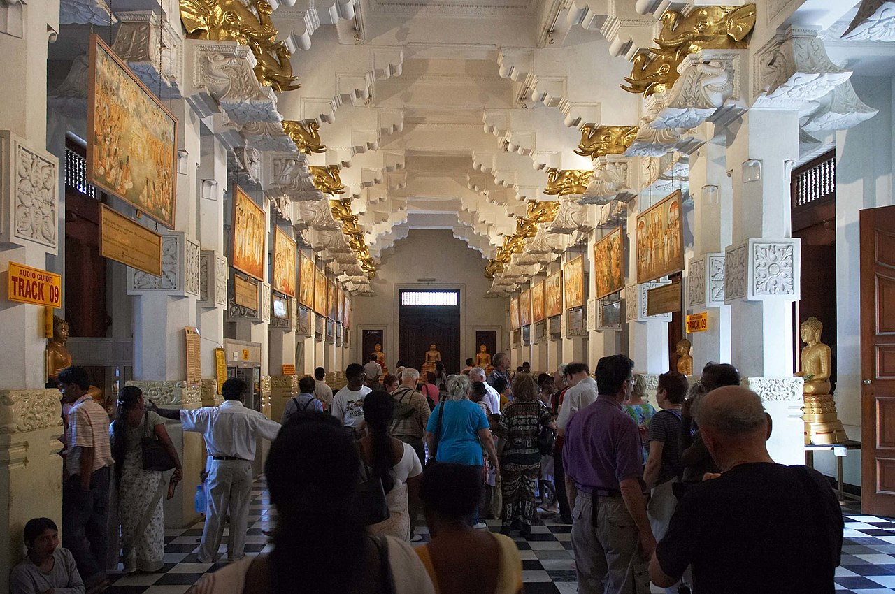
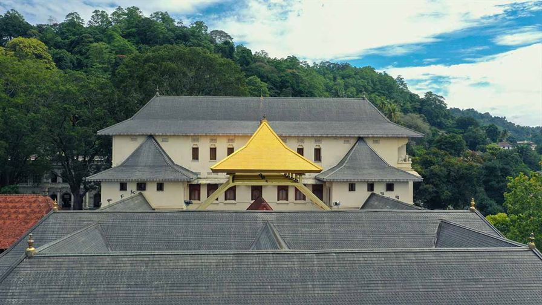
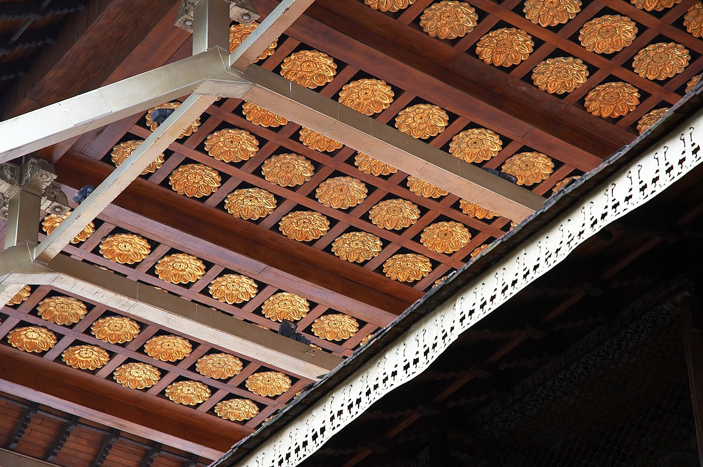
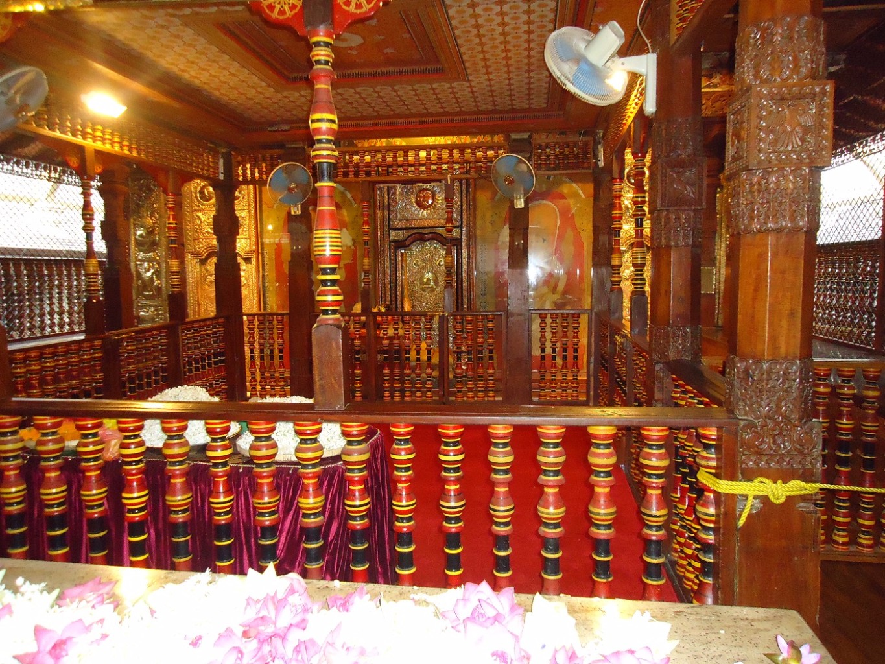

Home Wild life attractions Beaches Activities Heritage locations Hotel details Shop
...2.The Temple Of The Tooth Relic Kandy...

.Sri Dalada Maligawa, or Temple of the Sacred Tooth Relic, is a Buddhist temple in Kandy, Sri Lanka. It is housed in the former Kingdom of Kandy's royal palace complex, which also houses the relic of the Buddha's tooth. Since ancient times, the relic has played an important role in local politics because it is believed that whoever holds the relic controls the country's governance. The relic has historically been held by Sinhalese kings. The temple of the tooth is a World Heritage Site in part because of the temple and the relic.
...History...
. According to legend, after Gautama Buddha's Mahaparinirvana, the tooth relic was preserved in Kalinga and smuggled to the island on the orders of her father, King Guhasiva, by Princess Hemamali and her husband, Prince Dantha. Hemmamali hid the relic in her hair on the way to the island. They landed on the island of Lankapattana during the reign of Sirimeghavanna of Anuradhapura and handed over the tooth relic. It was enshrined in Anuradhapura's Meghagiri Vihara by the king. From then on, the monarch was responsible for safeguarding the relic, and custodianship of the relic came to symbolize the right to rule the island. As a result, reigning monarchs, as was the case during the Anuradhapura Kingdom, built tooth relic temples near their royal residences.

.The relic was relocated and hidden in a grinding stone at Ratnapura's Delgamuwa Vihara during the reign of Dharmapala of Kotte. It was delivered to Kandy by Hiripitiye Diyawadana Rala and Devanagala Rathnalankara Thera. To house the tooth relic, King Vimaladharmasuriya I built a two-story structure, which has since been demolished. It was taken to Meda Mahanuwara in Dumbara after the Portuguese kingdom invaded Kandy in 1603.
...Architecture...
   
. The water waves wall is a brick wall that runs alongside the Bogambara lake and the moat. Holes in this wall are intended to light coconut oil lamps. The main entrance gate, Mahawahalkada, is located over the moat. At the foot of the Mahawahalkada steps is a Sandakada pahana carved in Kandyan architectural style. After being completely destroyed by a bomb blast in 1998, Mahawahalkada was rebuilt alongside Sandakada pahana and other stone carvings. Elephants are carved in stone on either side of the entrance.
. In 1987, then-Prime Minister Ranasinghe Premadasa constructed the golden canopy over the main shrine and the golden fence that encircles the temple complex. Seven gold caskets encrusted with precious gemstones hold the tooth relic. The casket represents a stupa, and the procession casket used during the Kandy Esala Perahera is displayed in the same chamber.